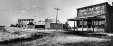

|
Derbyshire Derby is the county town of Derbyshire, a municipal and parliamentary borough and market town, comprising the parishes of St. Alkmund's, St. Peter's, St. Michael's, All Saints, and St. Werburgh's. Read more... |
|
West Yorkshire Dewsbury is a town in the West Riding of the county of York comprising the township of Dewsbury and Batley. Read more... |
|
West Yorkshire  Earlsheaton, (or Soothill, Nether) was a hamlet and ecclesiastical district in the parish of Dewsbury. Read more... |
|
West Yorkshire  Thornhill Lees was a village and ecclesiastical parish formed in 1859 from the parishes of Dewsbury and Thornhill located one mile south from Dewsbury. Read more... |
|
Providence Bottle Works Thornhill Lees West Yorkshire  This article was published by the Dewsbury Reporter in their Men of Science supplement. Read more... |
 Steam ships departing from Liverpool to North America taken by our great-grandparents and their families. Read more... |
|
Saskatchewan Routes  Beginning in the early spring of 1905, the Canadian Northern Railway concentrated its efforts on completing track-laying between Kamsack, Saskatchewan and Edmonton, Alberta and between Melfort and Prince Albert, Saskatchewan. Read more... |
|
Saskatchewan  Warman got its start as a community in 1905, when Canadian Northern Railway completed track-laying between Kamsack and Edmonton. Read more... |
|
Saskatchewan  Saskatoon, a commercial and educational centre in the province of Saskatchewan, is situated on the banks of the South Saskatchewan River. Read more... |
|
Saskatchewan  Lumsden is located in the heart of the Qu'Appelle Valley, 19 miles northwest of Regina. Read more... |
Margaret Carruthers c1900 |
Margaret Thomas was born May 1, 1860 at 54 Mundy Street in Saint Alkmund’s parish in Derby, Derbyshire. Her parents Robert Thomas and Elizabeth Wright registered her birth May 31, 1860. Margaret’s parents were married September 7, 1840 in Taunton, Somerset. Her father Robert Thomas was born about 1814 in Stanton Newhall, Derbyshire. Her mother Elizabeth Wright was born about 1819 in Manchester, Lancashire. Margaret was the youngest of their five children.
Margaret’s four siblings were Emma, Hannah, Mary and Robert. Her father was a hawker who sold T. G. Greens earthenware over a large area of England, and as a result, his children were born in a variety of locations. Emma was born in Yeovil, Somerset in early 1843 at the Half Moon Public House. Hannah was born in Williton, Somerset on December 22, 1846 at one of the local public houses. Mary was born in Derby, Derbyshire in the summer of 1849. Robert was born in Newhall, Derbyshire in the summer of 1857.
Margaret lived with her parents and her siblings in Derby until her father’s death. Robert Thomas died (age 52) on December 25, 1867 at Greyhound Yard, Friargate in Derby, Derbyshire. His death was registered by his daughter Mary Thomas.
Soon after his death, Margaret and her mother Elizabeth moved to Middle Road, Westtown in Dewsbury, where they lived with Isaac Banks. At a very young age, Margaret Thomas became a servant at the George Cooper residence down Middle Road two houses from where Isaac and Elizabeth lived.
High Street Westtown Dewsbury, West Yorkshire (Neighborhood where Margaret lived during the 1870s) |
Margaret’s mother Elizabeth Banks died in September 1875 on Manor Road in Dewsbury. She was buried on September 20, 1875, at age 59 years. She is buried in Public Grave G349 in the Consecrated Section of Dewsbury County Cemetery. Margaret continued to live with her step-father Isaac Banks in Westtown.
By 1877, Margaret had developed a relationship with Thomas Imeson, who had moved from Driffield in East Yorkshire to Earlsheaton, a village close to Dewsbury. Thomas was a cordwainer, making boots for the Earlsheaton mineworkers. Thomas Imeson was born November 6, 1856 on Washington Street in Great Driffield. His parents were Philip Imeson and Hannah Creaser. Philip was born May 13, 1827 in Middleton on the Wolds in East Yorkshire. He was a journeyman shoemaker. Hannah was born December 29, 1822 in Flamborough in East Yorkshire. Philip and Hannah were married May 26, 1851 in Great Driffield. Thomas was the fourth of six children.
Margaret planned to marry Thomas, but because she was only 18 years of age when she planned to marry, she needed her parents’ consent. Since both her father Robert and her mother Elizabeth had already died, that left her step-father Isaac Banks to give permission for Margaret to marry. Margaret Thomas (age 18) and Thomas Imeson (age 19) married February 17, 1878 at the Parish Church in Dewsbury. Isaac Banks witnessed the marriage, continuing his role as Margaret’s step-father. Isaac Banks died (age 55) on December 21, 1878 at the Union Workhouse in Dewsbury. He is buried in Public Grave H706 in the Consecrated Section of Dewsbury County Cemetery.
Margaret and Thomas made their home in Earlsheaton, relatively close to Thomas’s mineworker customers.
Philip Imeson, their first child, was born February 8, 1879 on Hill End, Wakefield Old Road in Earlsheaton. His birth was registered March 4, 1879 by his father Thomas Imeson.
Hill End — Earlsheaton |
Mary Emily Imeson, their second and last child, was born May 24, 1881 on Hill End, Wakefield Old Road, Earlsheaton. Her birth was registered June 28, 1881 by her father Thomas Imeson. Mary Emily was baptized July 9, 1882 at St Peters Parish Church in Earlsheaton.
Thomas Imeson died (age 25) on November 5, 1881 at Hill End, Wakefield Old Road, Earlsheaton of typhoid fever. He had been sick for a week before his death. He was buried November 7, 1881 at Private Grave Section C North Number 332 at the Earlsheaton County Cemetery. There is an enormous sycamore tree growing out of the center of the plot. It must be at least 60 feet tall and looks as if it has been there a lot of years.
Margaret was a widow with two children at age 21. About a year later, she began a relationship with widower Charles Flowers from the Thornhill area. Charles and his twin brother Joseph were born March 23, 1854 at Hall Green, Crigglestone. His parents were George Flower and Mary Ann Cooper. Charles had married his first wife, Ann Exley, on January 21, 1882 at the Thornhill-Lees Parish Church. Ann Flowers died May 10, 1882 at South View Savile Town, Thornhill after less than four months of marriage. Margaret (age 25) married Charles Flowers (age 29), on January 12, 1884 at All Saints Parish Church in Dewsbury.
After their marriage, Charles and Margaret lived on New Street in Earlsheaton. Margaret’s third child, George Flowers, was born December 26, 1885 on New Street in Earlsheaton. His birth was registered January 30, 1886.
Around 1887, Charles and Margaret, and their three children moved to Walker Street in Thornhill Lees. Charles was a blacksmith who was responsible for all wrought- iron work at Thornhill Lees Railway Station.
Their next born was William Flowers who was born January 11, 1889 on Walker Street in Thornhill Less. His birth was registered February 16, 1889 by Charles Flowers. William was baptized April 16, 1890 at the St Michaels and All Angels Parish Church in Thornhill.
Joseph Flowers was born May 5, 1891 at 27 Walker Street in Thornhill Lees. His birth was registered June 13, 1891 by his father Charles Flowers. Joseph was baptized November 18, 1891 at Thornhill Parish Church.
Lily Flowers was born September 6, 1893 on Walker Street in Thornhill Lees. Her birth was registered October 13, 1893 by Charles Flowers. Lily was baptized March 26, 1895 the Thornhill Parish Church.
Charles and Margaret got to know many of the families who lived on Walker Street and became friends with the Carruthers family who also had young children and lived nearby at 12 Walker Street. William worked at the Providence Glass Works in Thornhill Lees as a glass bottle blower.
53-55 Ingham Road Thornhill Lees, West Yorkshire Houses built by Charles Flowers |
On July 27, 1893, Charles Flowers undertook to lease about 400 square yards of land on Ingham Road in Thornhill Lees on which he planned to build two dwellings. He arranged to have both homes built, and moved into the second unit in 1895.
Charles and Margaret now had six children ranging in age from two years to sixteen years, continuing to look after Philip and Emily, Margaret’s children from her first marriage, as well as their own four children.
Charles began to have heart problems and died of heart disease at age 40 on February 1, 1896 on Ingham Road in Thornhill Lees. His death was registered February 3, 1896 by his wife Margaret Flowers. Charles Flowers was buried at St Michaels and All Angels Parish Church graveyard in Thornhill on February 4, 1896. Margaret was left a widow (age 37) for the second time with six children to look after. Margaret needed help to look after her family. Probate of Charles Flowers’ Will was granted February 27, 1896 to Margaret Flowers the Sole Executor.
On September 8, 1900, Philip Imeson, Margaret’s oldest son, married Annie Matthewman, leaving Emily as the oldest of five children at home. Philip was living at 53 Ingham Road in Thornhill Lees with his mother, step-father and siblings, whereas Annie was living in Thornhill. Philip and Annie moved to live on Park Road in Conisbrough, West Yorkshire. Philip worked in Conisbrough at Kilner Brothers Glass Works as a blacksmith, a trade he had learned from his step-father Charles Flowers before his death in 1896.
12 Walker Street Thornhill Lees, West Yorkshire William Carruthers’ Home |
Margaret and her family continued to live on Ingham Road in Thornhill Lees. Early in 1899, William Carruthers’ wife Annie died leaving William a widower. Even though it had been three years since her husband Charles had died, Margaret could fully understand what William was feeling. As a result, Margaret was able to console William and help him with his grief, leading a very close relationship. Margaret (age 41) married William Carruthers, who was age 46, at the Dewsbury Registrar Office on September 29, 1900. They continued to live on Ingham Road in Thornhill Lees where William worked. Margaret and William had one child, Arthur Carruthers, who was born October 20, 1900 on Ingham Road in Thornhill Lees.
Philip and Annie Imeson’s first child Althera Imeson was born in Conisbrough in 1902, and registered in Doncaster, West Yorkshire. In about 1904, Philip and Annie moved to Dewsbury in West Yorkshire, where Philip continued to work as a blacksmith. Their second child Tom Imeson was born July 17, 1905 in Dewbury. His birth was registered in Dewsbury. Their third child Philip Imeson was born April 6, 1909 in Dewsbury. His birth was also registered in Dewsbury.
West Vale Thornhill Lees - c1905 |
Typical Woolen Mill - c1905 |
Emily lived at home in Thornhill Lees and worked as a woolen weaver at the Wormalds and Walker Factory on Thornhill Road, West Vale. Emily met Sam Exley, who was a friend of William, her younger brother. Sam lived with his family nearby at 10 Lees Grove in Thornhill Lees. Sam Exley and William worked at Kilner Brothers Providence Glass Works in Thornhill Lees. Sam was as a glass bottle taker in. Several members of the Flowers, Carruthers and Watson families all worked in various capacities at the Providence Glass Works.
Wormalds and Walker Ltd of Dewsbury Mills was established in 1811 as Hague and Cook and existed until 1913. It was the nation’s leading manufacturer of blankets. |
 Sam Exley & Mary Emily Imeson Wedding Day - January 5, 1907 |
In 1906 when Sam’s parents decided to immigrate to Canada, Sam decided not to go with them as Emily and he had plans to marry. As a result, in 1906 Sam moved to 8 South Elmwood Street in Dewsbury. On January 5, 1907, Emily (age 25) married Sam Exley (age 21) at the Dewsbury Registrar Office. Emily and Sam then moved to 4 Forest Cottages on Lees Hall Road in Thornhill Lees. Later that year, Emily and Sam had their first child named Percy Scott Exley born November 4, 1907 in Thornhill Lees. Sam continued to work at Providence Glass Works while Emily looked after her baby. About two years later, Emily and Sam had their second child named William born November 13, 1909 in Thornhill Lees. Sam and Emily, along with their two children immigrated to Canada in March 1910. Sam’s step-father Edmund Watson had arranged for a job working for the railway as section man. On March 10, 1910, they left Liverpool on the S. S. Tunisian of the Allan Lines, the same ship that Sam’s step-father had taken, and arrived in Halifax, Nova Scotia March 18, 1910. The family traveled by train from Halifax to Warman, Saskatchewan to join his parents Edmund and Ann Watson.
William Flowers decided that he should visit Canada, to visit with his sister and best friend Sam Exley. He departed Liverpool on May 13, 1910 on the SS Megantic, a White Star Dominion liner. He arrived in Montreal about eight days later. He traveled by train via Winnipeg to Warman Saskatchewan where he met up with Sam Exley and his sister Emily. He very quickly had a job with the Canadian Northern Railway where Sam worked.
Saint John, New Brunswick Immigrants waiting to go ashore - c1911 |
Saint John, New Brunswick Immigrants arriving ashore - c1911 |
Saint John, New Brunswick Immigrants departing on a train - c1911 |
 William Flowers, Sam & Percy Scott Exley Saskatoon - 1911 |
By the later part of 1910, Margaret was receiving glowing reports from William and Emily encouraging them to move to Canada as well. So on December 9, 1910, Margaret sold her two houses located on Ingham Road, Thornhill Lees, and made arrangements to immigrate to Canada early in 1911. William Carruthers was torn, as he hated to leave his own children behind, but he also wanted to stay with Margaret. He eventually decided to stay, and move back with his children on Walker Street. Her son Philip and his wife Annie had also remained in England. Margaret and four of her remaining off-spring journeyed to Liverpool to board the Empress of Britain on February 11, 1911, for their trip to Canada. They arrived in Saint John, New Brunswick on February 18, 1911. When they arrived in Saint John, Margaret’s health had deteriorated and she became very ill. As a result, she was not well enough to continue on to Lumsden, Saskatchewan where Emily and her family lived. She was also too ill to return to England, so she stayed in Saint John until her health improved. The family stayed in Saint John for more than six weeks while she recovered from her illness. During the family’s stay in Saint John, Margaret decided that when she was well enough to travel, she would return to England instead of finishing her trip to Lumsden. She encouraged her sons George and Joseph and her daughter Lily to finish their trip west to Saskatchewan. On April 6, 1911, Margaret and her youngest son Arthur boarded the Empress of Ireland for their return trip to Liverpool. They traveled third class arriving in Liverpool April 15, 1911. On their return home William Carruthers was thrilled to see them. He was still working for Kilner Brothers at the Providence Glass Works in Thornhill Lees. After their return, William and Margaret and the family lived at Prospect Terrace at 49 Brewery Lane in Thornhill Lees.
The Flowers’ siblings did decide to stay in Canada. They boarded a train for the long journey to Lumsden, Saskatchewan, a distance of over 2600 miles to reunite with William and Emily. Soon after arriving in Lumsden, Margaret’s three adult sons, George, William and Joseph moved to Warman, Saskatchewan to work beside Edmund and Charles William Watson as section men for the Canadian Northern Railway. Lily remained in Lumsden with her sister Emily and her family. Later they moved to Saskatoon.
William Flowers Saskatoon - 1911 |
William Flowers & Sam Exley Saskatoon - 1911 |
By the autumn of 1911, the Flowers’ siblings were missing their homeland, and decided to return to Yorkshire as soon as they could make arrangements. Emily’s mother-in-law Ann Watson decided that she would travel with them to visit family still living in England. They traveled by train to Quebec City, and sailed back to Liverpool on the Empress of Britain. They departed on November 3, 1911 and arrived in Liverpool on November 10, 1911. It was a rough crossing. They arrived back home in Thornhill Lees virtually penniless. They later learned that the Empress of Ireland had collided with another ship and sank in the Gulf of Saint Lawrence, and recalled that Margaret and Arthur had took that same ship three years earlier.
William Carruthers died (age 58) on March 31, 1913 at 49 Brewery Lane in Thornhill Lees of heart disease and bronchitis. Williams’s death was registered by his son James Carruthers on March 31, 1913. William Carruthers is buried at the municipal cemetery in Dewsbury on April 2, 1913 in a Private Grave plot I 109, along with his first wife Annie.
 2503 Melrose Avenue Saskatoon - c1913 Built by William Flowers & Sam Exley |
William Flowers decided to travel back to Canada about a year after returning. He departed Liverpool April 26, 1913 on the Laurentic and arrived in Quebec City May 7, 1913. He traveled to Saskatoon, Saskatchewan on the Canadian Northern Railway. Besides visiting Sam and Emily, he helped Sam build a house in South Saskatoon that summer and autumn. During the two winters William Flowers had spent in Canada, he experienced the most severe conditions, nearly freezing to death. They lived in two log cabins miles from anywhere. The cabins had a cord between them which was used as a primitive telephone. Native Indians used to beg food and water from them which was frightening. The cabins had a hole dug in the floor where food stuffs were stored and kept cool in clay. A bear entered the cabin on one occasion and stole the butter out of this hole in the floor and set about feeding itself on the porch. Sam Exley shot at it with a gun and the bear ran away. The winters were so cold that the Mounties used to push people along if they stopped so that they would not freeze. William had difficulty adjusting to this severe climate. As the summer of 1914 neared, William was missing England and his family and decided that it was time to go home. He traveled by train back to Montreal, sailing on the Megantic July 4, 1914 and arriving in Liverpool on July 12, 1914. enroute to his home in Yorkshire. This was his last visit to Canada and the last time he visited his sister.
49 Brewery Lane Thornhill Lees, West Yorkshire Carruthers' Home - c1914 |
Navigation Street Thornhill Lees |
Philip and Annie Imeson - c1925 |
After Lily’s marriage in 1914, Margaret and family moved to 2 Navigation Street in Thornhill Lees.
Philip and Annie continued to live in Dewsbury, where Philip’s blacksmith business flourished. Their fourth child Bertie Imeson was born March 12, 1912 in Dewsbury. His birth was registered in Dewsbury. About 1913, Philip and family moved to Ossett, where he set-up his own blacksmith business. Their fifth child, Jessie Imeson was born November 12, 1914 in Ossett. Her birth was registered in Dewsbury. Their final child Wilson Imeson was born in 1921 in Ossett. His birth was registered in Dewsbury.
William Flowers & Celia Addinall- Wedding Day January 28, 1922 |
Celia Addinall & William Flowers - c1950s |
Navigation Street Thornhill Lees |
During the early years, his job as a section hand with the Canadian Northern Railroad took Sam and Mary Emily to Lunsden, Saskatchewan where Margaret Exley, their third child, was born November 1, 1911. On his return to work at Warman around 1912, Sam and family took up residence in Saskatoon. Cora Exley, their fourth child, was born August 3, 1918 in Saskatoon. Sam was offered a promotion as a signalman, so in 1920 Sam and family moved to Conquest, Saskatchewan. While in Conquest, their fifth child Winnie Exley was born May 13, 1921. In 1927, Sam and Emily returned to Saskatoon with their younger children, where Sam became an insurance agent, which he continued until he retired. Sam also delved into the Real Estate business, but soon gave it up. Sam had also established Yorkshire Fish and Chips shop in 1941 on Broadway Avenue in Saskatoon, but he had to close it the next year.
Mary Emily Exley died November 24, 1955 in Saskatoon. She was buried November 28, 1955 at Woodlawn Cemetery in Saskatoon in grave 45A-L011-SH. Sam Watson Exley died February 8, 1971 in Saskatoon. He was buried February 10, 1971 at Woodlawn Cemetery in Saskatoon in grave 45A-L011-SH.
George Flowers, Margaret’s third child, married Florence Mary Littlewood on July 5, 1917 at Thornhill Lees Holy Innocents Parish Church. Their only child was Gilbert Flowers born July 13, 1918.
William Flowers enlisted with the Royal Flying Corps on December 11, 1915. He was mobilized July 7, 1916 and posted to Farnborough July 11, 1916. William was discharged from the military on September 29, 1917 for medical reasons.
Thornie View - Thornhill Lees Joseph Flowers Home - c1917 |
William Flowers, Margaret’s fourth child, married Phyllis Celia Addinall on January 28, 1922 at the parish church in Thornhill Lees. William was a taxi proprietor living at 1 Thorney View in Thornhill Lees. Celia was living at 1 Navigation Street in Thornhill Lees. Their first child, Phyllis Celia Cynthia Flowers was born August 18, 1922 in Thornhill Lees. By 1923, William and Celia were living at 30 Fir Avenue in Ravensthorpe, West Yorkshire. Their second child, José Flowers was born in November 1923 in Ravensthorpe. Their third child Billie Flowers was born May 20, 1926 at Moorlands Hall in Dewsbury.
Ethel & Joseph Flowers |
Joseph Flowers, Margaret’s fifth child, married Ethel Green in July 5, 1916 at the parish church in Thornhill Lees. Joseph was a soldier living at 2 Navigation Street in Thornhill Lees. Ethel was living with her parents at Canal Cottage in Thornhill Lees. Their first child, Kathleen Flowers was born November 12, 1919 in Thornhill Lees. Their second child , Renee Flowers was born February 11, 1925 in Thornhill Lees.
 Lily Flowers - c1914 |
Lily Flowers, Margaret’s sixth child, married Stanley Senior in January 23, 1914. Their first child, Harry Senior was born in 1915 in Dewsbury and died in infancy in 1916. Their second child, George Senior was born March 15, 1920 in Dewsbury. Their third child, Leslie Senior was born June 13, 1929 in Dewsbury.
Arthur Carruthers, Margaret’s seventh child, never married. He enlisted in the army in WW2, but was discharged. He worked at L.B. Holidays die works in Huddersfield for a while and he used to do odd jobs for people. He used to visit his step brother James (Jim & Carrie) Carruthers on Back Slaithwaite Road in Thornhill Lees.
Margaret was a widow again (age 54) for the third time, and she still had children at home to look after. Within Margaret’s lifetime, she married three times, she gave birth to seven children, and she had twenty grandchildren, which she either knew or knew about. So far, she has had 261 descendents.
Margaret died (age 71) of Myocardial degradation on July 22, 1931 at Dewsbury Infirmary, 58 Healds Road in Dewsbury. Margaret’s death was registered by her oldest son Philip Imeson July 23, 1931. Margaret Carruthers was buried in Ossett Graveyard reference NG E6. Philip Imeson died in Ossett, West Yorkshire in January 1943. He was buried in South Ossett Church Yard, NG E6.